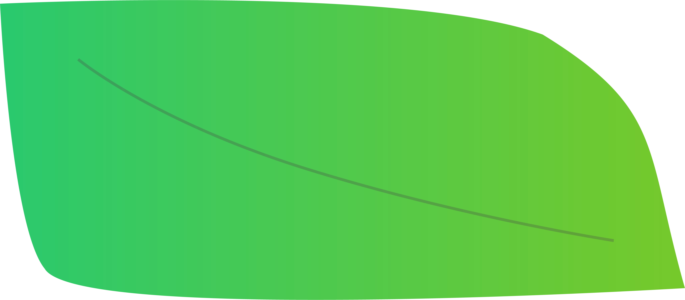

<ons-page>
  <div class = "tree">
  <ons-navigator id="formNav0">
  <ons-toolbar>
    <div class="center" id="form-title">みんなのイイコト</div>
  </ons-toolbar>
  <div style="text-align: center; margin-top: 60px;">
    <!--
      <h3>日付を選択してください</h3>
    <p>
      <ons-input id="date" modifier="underbar" type="date" float></ons-input>
    </p>
    
    <p>
      <ons-select id="cate" onchange="editSelects(event)">
    <option value="ure">嬉しいこと</option>
    <option value="kana">悲しいこと</option>
    <option value="tano">楽しみなこと</option>
  </ons-select>
      </p>
      -->
      <div style="text-align: center; margin-top: 100px;"></div>
      <div class="numte">
      <p>
        集まったイイコトの数
      </p>
      <div id="reportcount">
      </div>
      </div>
      
      </p>
      <div class="leaf">
   
 </div>
 
 <div class="replet">
   <p style="margin-top: -25px;"></p>
 <ons-list id="reports">
    </ons-list>
 </div>
 <div class="lebot">
      <ons-button id="view-report">誰かのイイコトを見てみる</ons-button>
 </div>
    
  </div>
  </ons-navigator>
  </div>
  <script>
    ons.getScriptPage().onInit = async function() {
      // 日報を閲覧するボタンを押した時の処理
      $('#view-report').on('click', async f => {
        // 検索対象の日付を取得
        //const day = new Date($('#date').val());
        const category =$('[id=cate] option:selected').text(); 
        // 該当日の日報を取得
        const reports = await fetchReports(category);
        // 取得した日報を表示
        viewReports(reports);
      })
    }
    var GameScore = ncmb.DataStore("Report");
GameScore
         .count()
         .fetchAll()
         .then(function(results){
            console.log(results.count); // 検索結果の件数を表示
            var str = results.count;
      document.getElementById('reportcount').innerHTML = str ;

      if(results.count>=0 && results.count<10){
        $('.tree').css({
        backgroundImage: 'url(lib/onsenui/image/01.gif)' 
    });
      }else if(results.count>=10 && results.count<20){
        $('.tree').css({
        backgroundImage: 'url(lib/onsenui/image/02.gif)' 
    });
      }else if(results.count>=20 && results.count<30){
        $('.tree').css({
        backgroundImage: 'url(lib/onsenui/image/03.gif)' 
    });
      }else if(results.count>=30 && results.count<40){
        $('.tree').css({
        backgroundImage: 'url(lib/onsenui/image/04.gif)' 
    });
      }else if(results.count>=40 && results.count<50){
        $('.tree').css({
        backgroundImage: 'url(lib/onsenui/image/05.gif)' 
    });
      }else if(results.count>=50 && results.count<60){
        $('.tree').css({
        backgroundImage: 'url(lib/onsenui/image/06.gif)' 
    });
      }

          })
         .catch(function(err){
            console.log(err);
          });
           
      
    
/*
    ons.getScriptPage().onShow = async function() {
      $('#date').val(dayjs().format('YYYY-MM-DD'));

    }
*/
    // 日報の取得
    async function fetchReports(category) {
const Report = ncmb.DataStore('Report');
  return await Report
    //.equalTo('category',category)
    //.equalTo('day', day)
    .include('user')
    .fetchAll();

    }

    // 日報の表示処理
    function viewReports(reports) {
      const html = [];
      const htmlc = [];
      //html.push(`<ons-list-header>${dayjs(day).format('YYYY年MM月DD日の日報')}</ons-list-header>`)
      reports.forEach(report => {
        html.push(`
              ${report.get('report').replace(/\n/g, '<br />')}
           
        `)
      });
      htmlc.push(`
          ${html[ Math.floor( Math.random() * html.length ) ]}
        `)

      $('#reports').html(htmlc.join(''));
      console.log(html);
      console.log(reports);
    }
  </script>
</ons-page>
